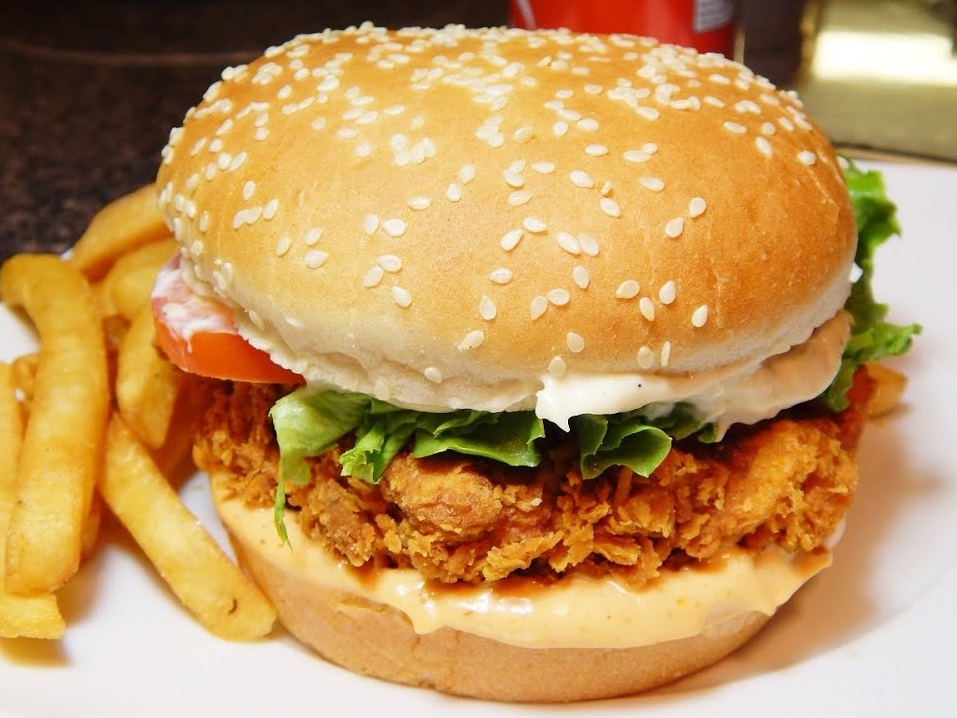
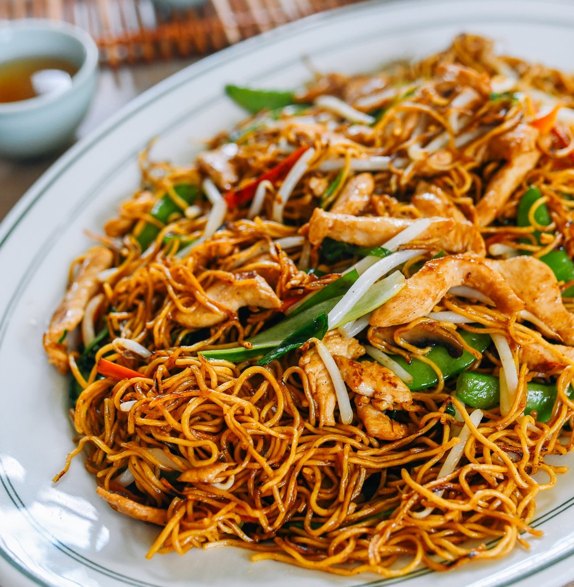
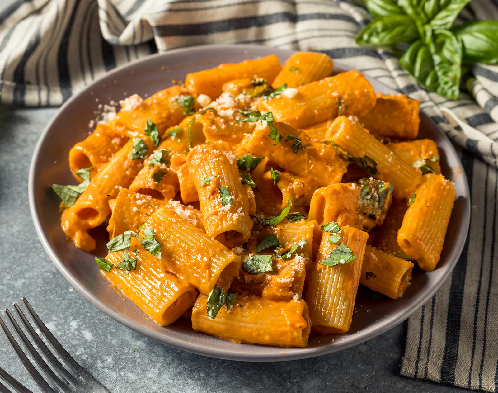

Recipes Overview
Desi Food
Chicken Biryani

Biryani is a mixed rice dish, mainly popular in South Asia. It is made with rice, some type of meat and
spices.
To cater to vegetarians, in some cases, it is prepared by substituting vegetables or paneer for the meat.
Sometimes eggs and/or potatoes are also added.
Fast Food
Zinger Burger
A Zinger Burger is a fried chicken recipe with a spicy twist. Hot fried chicken is sandwiched
between a sesame bun together
with lettuce and a creamy dressing for a classic chicken burger with a hint of spice.
Chinese Food
Chow Mein
Chow mein is a dish of Chinese stir-fried noodles with vegetables and sometimes meat or tofu. Over the
centuries,
variations of chǎomiàn were developed in many regions of China; there are several methods of
frying the noodles and a range of toppings can be used.
Italian Food
Pasta
Pasta is a type of food typically made from an unleavened dough of wheat flour mixed with water or eggs,
and formed into sheets or other shapes, then cooked by boiling or baking.
More Recipies will be updated soon.